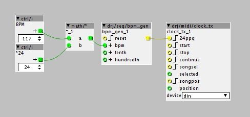

I can't find an easy solution to generate a MIDI clock from a precise BPM.
I found a couple of objects that are supposed to do that but their BPM dial or inlet don't match the tempo they're set to.
The generated clock is about 7 times too fast...
Does anyone know of a custom object or patch I could use?
Thanks.
MIDI clock generator with (real) BMP input
mrpoulpy
#1
mrpoulpy
#3
Thank you jaffasplaffa!
At first, I really didn't think much of your answer because I've seen these objects as I've been toying with all clock related objects for ages and nothing seemed to work. But I owed it to you to give it a try and... it works! 
You just have to multiply the desired bpm by 24 first. That's THAT simple. I can't believe it.

And to think I was about to mess with the (quite obscure) code of the midi/out/clock object!...
Still, it's a shame the midi/out/clock object can't be directly set to a specific BPM. I don't even know why the dial is called "bpm" instead of "speed" or something equally vague 
Merci beaucoup!
Gaëtan
jaffasplaffa
#4
Yeah, it would be lovely with an integer value for BPM for the factory clock objects, for sure.
And you are right, speed is probably yhe term that should be used, not bpm.
I hope this can work for you
Have a nice weekend!